第5章：组织你的应用程序的数据¶
在本章中，你将使用结构和枚举来组织你的应用程序的数据。然后，编译器可以帮助你避免错误，如使用错误的类型值或拼写错误的字符串。
在开发过程中，你的应用程序需要样本数据。你将使用一个编译器指令，只在开发期间创建这些数据。你将在预览内容中存储你的开发专用代码和数据，以便将它们从你的应用程序的发布版本中排除。
你将学习如何对你的应用程序进行本地化以扩大其受众。您将用NSLocalizedString实例替换面向用户的文本，生成开发语言（英语）Localizable.strings文件，然后将其作为添加其他语言的参考语言资源文件。
➤ 继续上一章的项目或打开本章起始文件夹中的项目。
创建练习结构¶
本节将学习的技能：如何使用枚举、计算属性、extension、static属性。
对于HIITFit的初始布局，你用两个字符串数组来表示练习名称和视频文件名称。这种极简的方法帮助你准确地看到每个视图需要的数据，这有助于保持预览的可管理性。
但你必须手动确保这两个数组中的字符串是一致的。把它们封装成一个命名类型的属性是比较安全的。
首先，你将创建一个具有你需要的属性的Exercise结构。然后，你将创建一个Exercise实例的数组，并在这个数组上循环，以创建TabView的ExerciseView页面。
➤ 创建一个新的Swift文件，命名为Exercise.swift。在import Foundation下面添加以下代码：
struct Exercise {
let exerciseName: String
let videoName: String
enum ExerciseEnum: String {
case squat = "Squat"
case stepUp = "Step Up"
case burpee = "Burpee"
case sunSalute = "Sun Salute"
}
}
在前面的章节中，你已经创建并使用了符合View协议的结构。这个Exercise结构为你的应用程序的数据建模，封装了exerciseName和videoName属性。
枚举练习名称¶
enum是枚举的简称。一个Swift枚举是一个命名的类型，可以有方法和计算的属性。它对于分组相关的值很有用，所以编译器可以帮助你避免错误，比如说拼错了一个字符串。
Swift
一个存储的属性是你用一个类型和/或一个初始值来声明的，比如let name: String或者let name = "Audrey"。你声明的计算属性有一个类型和一个计算其值的闭包，如var body: some View { ... }.
在这里，你为四个练习名称创建一个枚举。大小写名称是camelCase：如果你开始输入ExerciseEnum.sunSalute，Xcode将建议自动完成。
因为这个枚举有String类型，你可以指定一个String作为每个案例的原始值。在这里，你指定练习名称的大写版本：例如，sunSalute为Sun Salute。你可以用ExerciseEnum.sunSalute.rawValue访问这个String，例如。
创建一个锻炼实例的数组¶
你可以马上使用你的枚举来创建你的exercises数组。
➤ 在Exercise下面，完全在其大括号之外，添加以下代码：
extension Exercise {
static let exercises = [
Exercise(
exerciseName: ExerciseEnum.squat.rawValue,
videoName: "squat"),
Exercise(
exerciseName: ExerciseEnum.stepUp.rawValue,
videoName: "step-up"),
Exercise(
exerciseName: ExerciseEnum.burpee.rawValue,
videoName: "burpee"),
Exercise(
exerciseName: ExerciseEnum.sunSalute.rawValue,
videoName: "sun-salute")
]
}
在Exercise结构的扩展中，你将exercises数组初始化为一个类型属性。
exerciseName和videoName是实例属性。每个Exercise实例都有自己的这些属性值。类型属性属于类型，你用static关键字来声明它。exercises数组不属于一个exercises实例。无论你创建多少个Exercise实例，都只有一个exercises数组。你使用类型名来访问它。Exercise.exercises。
你用一个数组字面创建exercises数组：一个用逗号分隔的数值列表，用方括号括起来。每个值都是Exercise的一个实例，提供一个枚举案例的原始值和相应的视频文件名。
正如这个词所暗示的，一个扩展扩展了一个命名的类型。启动项目包括两个扩展，在DateExtension.swift和ImageExtension.swift。Date和Image是内置的SwiftUI类型，但是，使用extension，你可以添加方法和计算或类型属性。
在这里，Exercise是你自己的自定义类型，那么你为什么要有一个扩展？在这种情况下，它只是为了整理内务，使这个特殊的任务--初始化Exercise值的数组--与你的结构的核心定义--存储的属性和任何自定义初始化器分开。
开发人员还使用扩展来封装协议的要求，每个协议一个。当你这样组织你的代码时，你可以更容易地看到哪里需要添加功能或寻找错误。
重构ContentView和ExerciseView¶
现在，你将修改ContentView和ExerciseView以使用新的Exercise.exercices数组。
➤ 在ContentView.swift中，用这个替换ForEach循环范围：
ForEach(0 ..< Exercise.exercises.count) { index in
你没有使用一个神奇的数字，而是使用锻炼元素的数量作为ForEach范围的上界。
Note
你可以把整个Exercise项目传递给ExerciseView，但是，在下一章，你将使用index来决定何时显示SuccessView。
➤ 在ExerciseView.swift中，删除videoNames和exerciseNames数组。Exercise.exercise数组包含相同的数据。错误标志告诉你哪里需要使用这个数组。
用这个替换exerciseNames[index]：
Exercise.exercises[index].exerciseName
并在两处将videoNames[index]替换成这样：
Exercise.exercises[index].videoName
➤ 在ContentView.swift中运行实时预览，以检查所有内容是否仍然有效：
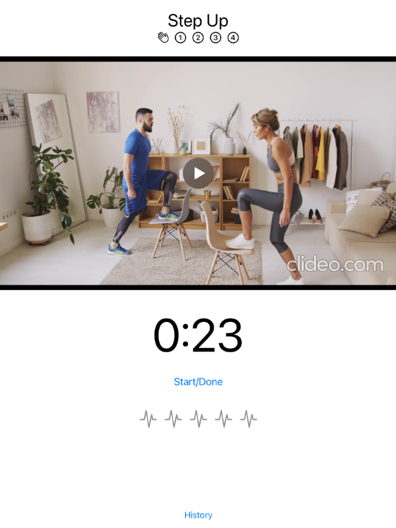
重构ContentView和ExerciseView几乎是你需要做的一切。除了HistoryView，你不需要修改其他任何视图。
构建HistoryView的数据¶
本节将学习的技能：Identifiable，mutating func，初始化器，编译器指令/条件编译，调试/发布构建配置，预览内容，ForEach与一个Identifiable值的数组。
HistoryView目前使用硬编码的日期和练习列表来模拟其显示。你需要一个数据结构来存储用户的活动。而且，在下一章中，你将实现Done按钮，将完成的练习名称添加到这个数据结构中。
创建HistoryStore¶
➤ 创建一个新的Swift文件并命名为HistoryStore.swift。将其与Exercise.swift分组，并将该组文件夹命名为Model：
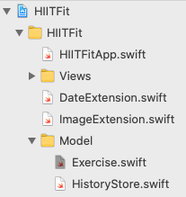
➤ 在import Foundation下面添加以下代码：
struct ExerciseDay: Identifiable {
let id = UUID()
let date: Date
var exercises: [String] = []
}
struct HistoryStore {
var exerciseDays: [ExerciseDay] = []
}
一个ExerciseDay有日期和用户在该日完成的锻炼名称列表的属性。
ExerciseDay符合Identifiable的规定。这个协议对于你打算用作集合元素的命名类型很有用，因为你通常想在这些元素上进行循环，或者在列表中显示它们。
当你用ForEach在一个集合上循环时，它必须有一个方法来唯一地识别集合中的每个元素。最简单的方法是使元素的类型符合Identifiable并包括id: UUID作为一个属性。
UUID是一个基本的Foundation类型，UUID()是最简单的方法，当你创建一个ExerciseDay实例时，可以创建一个唯一的标识。
HistoryStore的唯一属性是一个ExerciseDay值的数组，你将在HistoryView中循环使用。
在第9章"保存历史数据"中，你将扩展HistoryStore，用一个方法来保存用户的历史数据到持久性存储中，用另一个方法来加载历史。很快，你会给HistoryView添加一个HistoryStore属性，这将使它初始化。
同时，你需要一些样本历史数据和一个初始化器来创建它。
➤ 在HistoryStore下面，完全在其大括号之外，添加这段代码：
extension HistoryStore {
mutating func createDevData() {
// Development data
exerciseDays = [
ExerciseDay(
date: Date().addingTimeInterval(-86400),
exercises: [
Exercise.exercises[0].exerciseName,
Exercise.exercises[1].exerciseName,
Exercise.exercises[2].exerciseName
]),
ExerciseDay(
date: Date().addingTimeInterval(-86400 * 2),
exercises: [
Exercise.exercises[1].exerciseName,
Exercise.exercises[0].exerciseName
])
]
}
}
这与你之前的样本数据基本相同，现在存储在你新的Exercise和ExerciseDay结构中。在下一章，你将添加一个新的ExerciseDay项，所以我把开发数据移到了昨天和前天。
你在一个名为createDevData的方法中创建这个样本数据。这个方法改变了，或者说突变了exerciseDays属性，所以你必须用mutating关键字标记它。
你在一个扩展中创建这个方法，因为它不是核心定义的一部分。但也有另一个原因--马上就要来了!
现在，在主HistoryStore中，为HistoryStore创建一个初始化器，调用createDevData()：
init() {
#if DEBUG
createDevData()
#endif
}
你不想在你的应用程序的发布版本中调用createDevData()，所以你使用一个编译器指令来检查当前的构建配置是否为Debug：
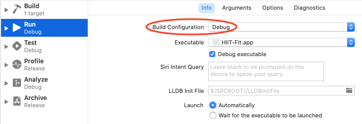
Note
要看到这个窗口，请点击工具栏上的HIITFit按钮。它也会在旁边打开运行目的地菜单。选择编辑方案...，然后选择信息标签。
将开发代码移入预览内容¶
事实上，你根本不希望createDevData()在你的发布版本中发货。Xcode为开发代码和数据提供了一个地方。预览内容。你放在这个组中的任何东西都不会被包含在你的发布版本中。
➤ 在预览内容组中，创建一个名为HistoryStoreDevData.swift的新Swift文件，并将HistoryStore扩展名移至其中：
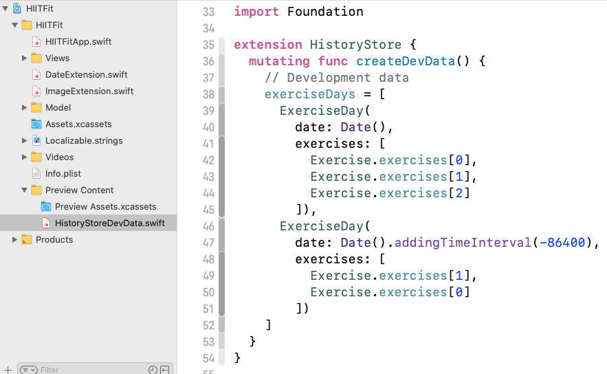
而这也是createDevData()在扩展中的另一个原因。你可以将扩展存储在单独的文件中。这意味着你永远不需要滚动浏览很长的文件。
重构HistoryView¶
➤ 在HistoryView.swift中，删除Date属性和练习数组，然后添加这个属性：
let history = HistoryStore()
HistoryStore现在封装了存储属性today、yesterday和练习数组中的所有信息。
目前，Form 闭包在一个Section.中显示每一天。现在你有一个exerciseDays数组，你应该在这个数组上循环。
➤ 用以下内容替换Form闭包：
Form {
ForEach(history.exerciseDays) { day in
Section(
header:
Text(day.date.formatted(as: "MMM d"))
.font(.headline)) {
ForEach(day.exercises, id: \.self) { exercise in
Text(exercise)
}
}
}
}
你用day.date代替today和yesterday。你用day.exercises代替命名的练习数组。
你刚刚替换的代码在exercises1和exercises2数组的String上循环。id: \.self参数告诉ForEach使用实例本身作为唯一标识符。exercises数组也包含String实例，所以你仍然需要指定这个id值。
➤ 刷新预览，确保它看起来还是一样的：
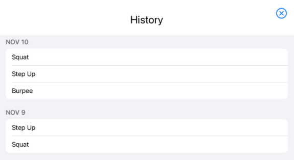
恭喜你，你已经建立了你的数据结构并重构了你的视图来使用它们。到此为止的最终项目都在final-no-loc文件夹中。本章的其余部分将告诉你如何对你的应用程序进行本地化。
本地化你的应用程序¶
在本节中你将学到的技能：如何使你的应用程序本地化；如何使用CustomStringConvertible和genstrings；如何改变应用程序语言。
你肯定想让你的应用程序的受众最大化。做到这一点的一个好方法是将其翻译成英语以外的语言。这就是所谓的本地化。
你需要完成以下任务。你可以以不同的顺序完成这些工作，但这个工作流程将为你节省一些时间。
- 为项目的开发语言（英语）设置本地化。
- 决定哪些面向用户的字符串需要本地化，并用
NSLocalizedString实例替换这些字符串。 - 从这些
NSLocalizedString实例中生成Localizable.strings的内容。 - 添加另一种语言，选择现有的英语
Localizable.strings作为参考语言资源文件。 - 在新语言的
Localizable.strings文件中，用翻译的字符串替换英文字符串。
开始¶
➤ 在项目导航器中，选择顶层的HIITFit文件夹。这将在编辑器中打开项目页面：
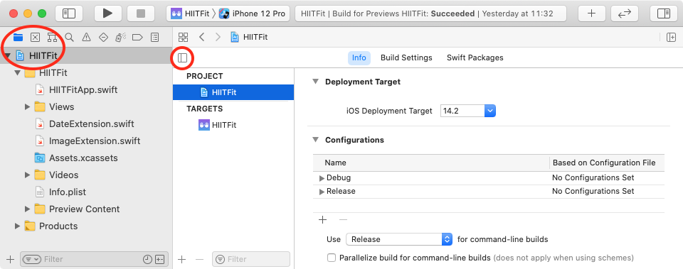
如果你没有看到项目和目标列表，请点击左上角的按钮。
➤ 选择HIITFit项目，然后选择其信息标签：
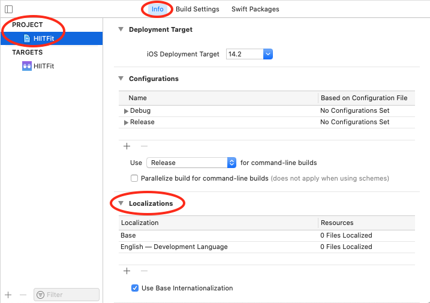
本地化部分列出了Base和英语--开发语言，都有0个本地化文件。
UIKit项目有一个Base.lproj文件夹，包含.storyboard和/或.xib文件。有LaunchScreen.storyboard文件的SwiftUI项目也有这个文件夹。这些文件已经被标记为开发语言（英语）的本地化。当你添加另一种语言时，它们会出现在你想要在新语言中进行本地化的资源清单中。所以像这样的项目至少有一个基础本地化的文件。
如果你不对你的应用程序做任何本地化处理，你就不会有任何开发语言的本地化文件。你的应用程序中所有面向用户的文本都是按照你写的方式出现的。一旦你决定添加另一种语言，你将用NSLocalizedString实例替换这些文本。为了使这种机制发挥作用，你还必须在开发语言中进行本地化。
Note
要把开发语言改为另一种语言，在文本编辑器中编辑project.pbxproj，对于developmentRegion和knownRegions，把en改为你喜欢的开发语言的ID。
你现在就可以添加另一种语言，但你下面要遵循的工作流程可以为你节省一些时间。
创建en.lproj/Localizable.strings¶
这一步是为项目的开发语言（英语）设置本地化。首先，你要创建一个名为Localizable.strings的字符串文件。
➤ 要在HIITFit组而不是视图组中创建此文件，请在项目导航器中选择Assets.xcassets或HIITFitApp.swift。
➤ 按Command-N打开新文件窗口，搜索字符串，然后选择字符串文件：
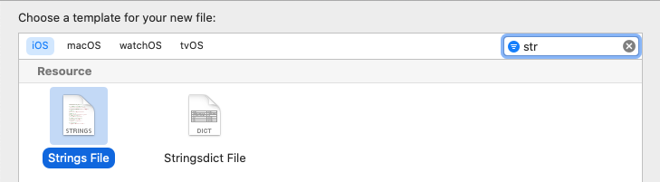
➤ 将此文件命名为Localizable。这是iOS使用的默认名称。不要让你的自动更正将其改为可本地化，否则每次引用本地化的字符串时，你都必须键入此文件的名称。
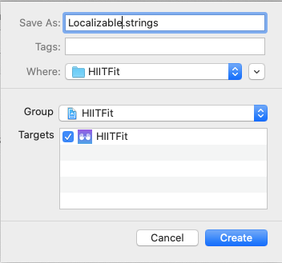
将这个文件命名为Localizable并不意味着它就是本地化的。你必须明确地将其本地化。
➤ 在项目导航器中选择Localizable.strings，并打开文件检查器（Option-Command-1）。
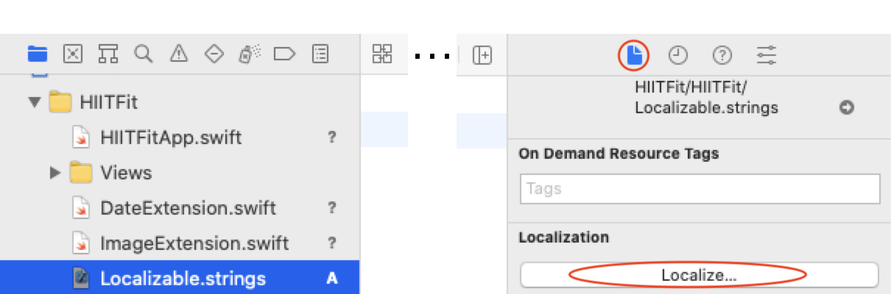
注意该文件的路径名是：
HIITFit/HIITFit/Localizable.strings
➤ 点击本地化.... 一些非常快的事情发生了! 如果文件检查器出现空白，在项目导航器中再次选择Localizable.strings：
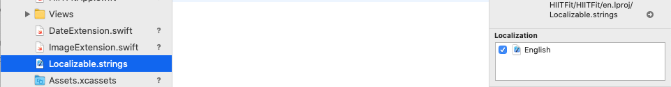
一个本地化部分已经取代了按钮。而现在文件的路径名有一个新的子目录：
HIITFit/HIITFit/en.lproj/Localizable.strings
这个新的en.lproj文件夹并没有出现在项目导航器中，但在Finder中出现了：
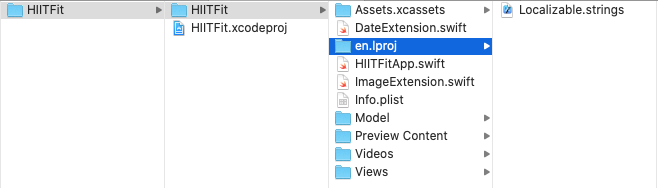
每当你对一个资源进行本地化时，Xcode会将其存储在一个名为xx.lproj的文件夹中，其中xx是语言ID（en代表英语）。
这就是项目级的设置了。接下来的两个步骤将在这个Localizable.strings文件中填入诸如"Start" = "Start";这样的行，每个你想翻译成另一种语言的字符串都有一个。
哪些字符串？¶
下一步开始决定要对哪些面向用户的字符串进行本地化。
➤ 现在扫描你的应用程序，找到用户看到的所有文本：
WelcomeView文本：欢迎，健身 ....- 练习名称作为
ExerciseView的标题和HistoryView的列表中使用。 Button标签：Get Started、Start/Done和History。SuccessView的文字：High Five,Good job....
创建NSLocalizedString实例¶
接下来，你将用NSLocalizedString(_:comment:)的实例来替换这些字符串，其中第一个参数是英文文本，comment提供信息来澄清字符串的上下文。如果你对另一种语言不了解，无法翻译你的文本，你通常会要求别人提供翻译。comment应该可以帮助译者做出符合你的语境的翻译。
➤ 在WelcomeView.swift中开始。把Welcome替换成这个：
NSLocalizedString("Welcome", comment: "greeting")
在这里，Welcome是一个问候语，而不是一个动词。
➤ 替换此视图中的大多数其他字符串：
NSLocalizedString("History", comment: "view user activity")
NSLocalizedString("Get Fit", comment: "invitation to exercise")
NSLocalizedString("Get Started", comment: "invitation")
➤ 暂时保留with high intensity interval training。
➤ 在ExerciseView.swift中，重新使用"History" NSLocalizedString并将"Start/Done"替换成这个：
NSLocalizedString("Start/Done", comment: "begin exercise / mark as finished")
➤ 在HistoryView.swift中，再次重复使用"History" NSLocalizedString。DateFormatter会自动对日期进行本地化，所以你不必对day.date做任何处理。
➤ 让SuccessView.swift保持原样。
这就解决了所有问题，除了练习的名称。你在Exercise.swift中创建了这些名称，所以你要在那里设置本地化的字符串。
本地化练习的结构¶
在Exercise.swift中，你一直使用ExerciseEnum的原始值作为exerciseName。现在你需要使用NSLocalizedString("Squat", comment: "exercise")代替。但是枚举的原始值必须是一个字面字符串，所以你不能用NSLocalizedString实例代替原始值。
你需要重构Exercise，以使用本地化的字符串，而不是枚举的原始值。
➤ 删除原始值，然后使枚举符合 CustomStringConvertible。这只是要求每个案例都有一个描述字符串。而描述字符串可以是一个NSLocalizedString实例。
enum ExerciseEnum: CustomStringConvertible {
case squat
case stepUp
case burpee
case sunSalute
var description: String {
switch self {
case .squat:
return NSLocalizedString("Squat", comment: "exercise")
case .stepUp:
return NSLocalizedString("Step Up", comment: "exercise")
case .burpee:
return NSLocalizedString("Burpee", comment: "exercise")
case .sunSalute:
return NSLocalizedString("Sun Salute", comment: "yoga stretch")
}
}
}
➤ 现在，在exercises数组中，使用exerciseName的description字符串而不是字面字符串：
extension Exercise {
static let exercises = [
Exercise(
exerciseName: String(describing: ExerciseEnum.squat),
videoName: "squat"),
Exercise(
exerciseName: String(describing: ExerciseEnum.stepUp),
videoName: "step-up"),
Exercise(
exerciseName: String(describing: ExerciseEnum.burpee),
videoName: "burpee"),
Exercise(
exerciseName: String(describing: ExerciseEnum.sunSalute),
videoName: "sun-salute")
]
}
现在，当ContentView.swift用一个ExerciseView初始化一个ExerciseView时，ExerciseView将能够用西班牙语显示该名称。
Note
为什么不是ExerciseEnum.squat.description而不是String(descripbing:)？嗯，CustomStringConvertible文档说 "不鼓励直接访问一个类型的description属性..."。
生成Localizable.strings内容¶
这里是第一个节省时间的步骤。
你的Localizable.strings文件需要包含像"Start" = "Start";这样的行，但它目前是空白的。你可以自己输入每一行，但幸运的是Xcode提供了一个工具来从你的NSLocalizedString实例中生成这些内容。
➤ 在Finder中，找到HIITFit文件夹，其中包含Assets.xcassets和en.lproj子文件夹：
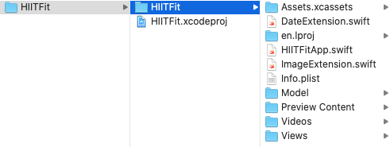
➤ 打开终端，输入cd，后面加一个空格，然后把这个HIITFit文件夹拖到终端：
cd <drag HIITFit folder here>
➤ 按返回键。你改变了目录，到了包含Assets.xcassets和en.lproj的文件夹。输入这个命令来检查：
ls
你应该看到像这样的东西：
Assets.xcassets Info.plist Views
DateExtension.swift Model en.lproj
HIITFitApp.swift Preview Content
ImageExtension.swift Videos
➤ 现在输入这个命令：
genstrings -o en.lproj Views/*.swift Model/*.swift
你使用Xcode命令行工具genstrings来扫描Views和Model中的文件以获取NSLocalizedString。它为key值生成必要的字符串，并将这些字符串存储在Localizable.strings文件中。
➤ 回到Xcode中，在项目导航器中选择Localizable.strings。它包含像这样的行：
/ view user activity /
"History" = "History";
这是你的评论中的comment和分配给自己的key字符串。你难道不高兴你不必自己打出所有这些吗？;]
添加一种语言¶
而这里是另一个省时的步骤。你将添加另一种语言，选择现有的English Localizable.strings作为参考语言资源文件。然后自动发生了!
➤ 在项目导航器中，选择顶层的HIITFit文件夹，然后选择项目和目标列表中的项目。在Localizations部分，点击+按钮，选择另一种语言：
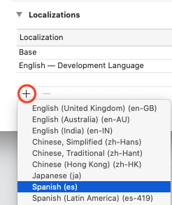
本章使用西班牙语。
现在你可以选择文件和参考语言来创建你的本地化：
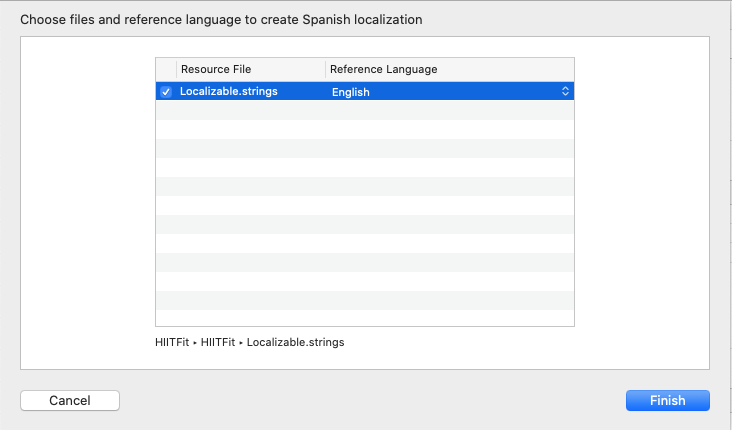
➤ 单击完成。
这产生了几个变化。本地化部分现在有一个西班牙语项目，其中已经有1个文件被本地化。
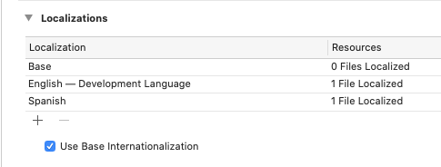
果然，项目导航器显示Localizable.strings现在是一个包含两个Localizable.strings文件的组。
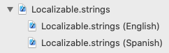
而西班牙文文件的内容与英文文件相同!
翻译¶
现在是最后一步。在替代语言的Localizable.strings文件中，你需要用翻译的字符串替换英语字符串。
➤ 打开Localizable.strings(西班牙语)，用翻译的字符串替换右侧的字符串：
/* exercise */
"Burpee" = "Burpee";
/* invitation to exercise */
"Get Fit" = "Ponte en forma";
/* invitation */
"Get Started" = "Empieza";
/* view user activity */
"History" = "Historia";
/* exercise */
"Squat" = "Sentadilla";
/* begin exercise / mark as finished */
"Start/Done" = "Empieza/Hecho";
/* exercise */
"Step Up" = "Step Up";
/* warm up stretch */
"Sun Salute" = "Saludo al Sol";
/* greeting */
"Welcome" = "Bienvenid@";
Note
通常情况下，讲西班牙语的人只是使用英语的练习名称。而用@来表示a或o是一种方便的方式，可以包含性别。
为本地化导出（可选）¶
如果您使用本地化服务来翻译您的字符串，Xcode有命令将Localizable.strings文件导出为XLIFF（XML本地化交换文件格式）并导入XLIFF译文。
在您导出之前，请将任何媒体资源或资产本地化，这些资源或资产为翻译人员提供了有用的上下文信息。
像.mp4文件这样的资源在其文件检查器里有一个本地化按钮。
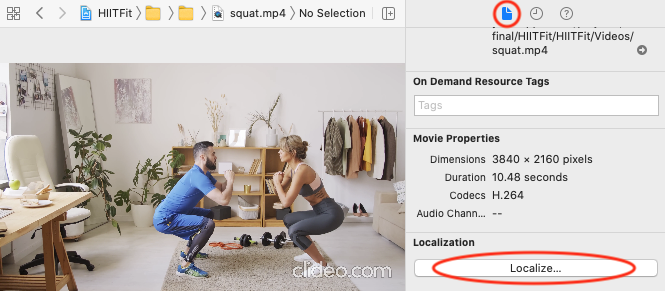
选择Base菜单选项：
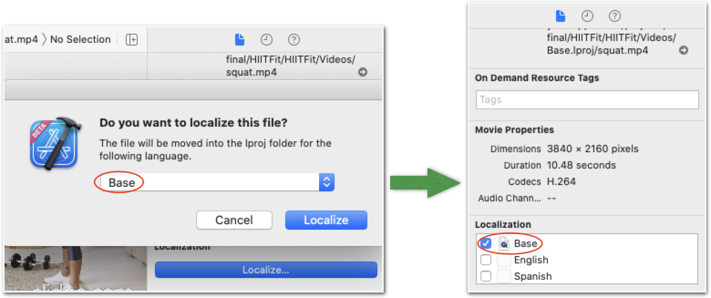
这将把.mp4文件移到Videos中一个新的Base.lproj文件夹中。
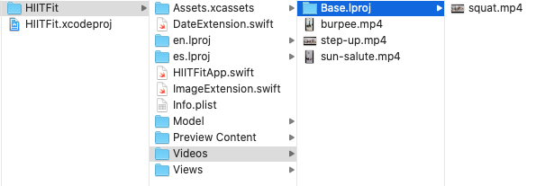
Assets.xcassets项目的本地化按钮在其属性检查器中（Option-Command-4）。勾选西班牙语的方框：
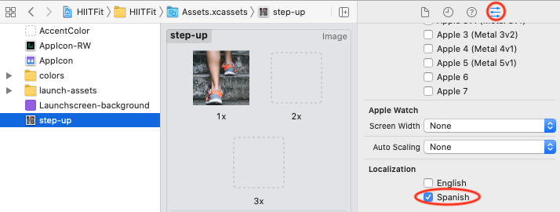
要为本地化导出，在项目导航器中选择项目，然后选择Editor ▸ Export for Localization...。
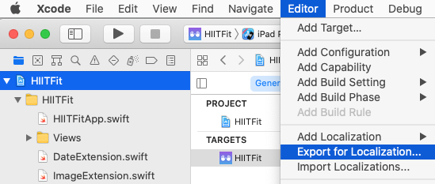
勾选你要翻译的语言，并选择导出的文件夹保存位置。
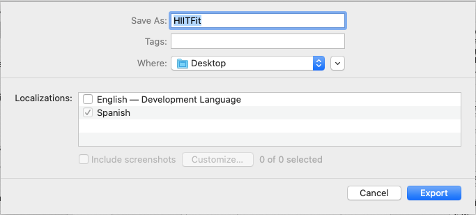
Note
最终定位的项目导出到预览内容，以保持它与项目的关系。
看看你得到了什么：
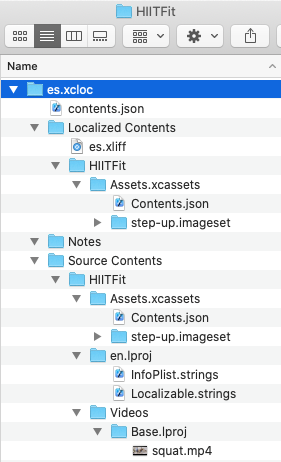
导出的文件夹与你的项目名称相同，并包含你所选语言的.xcloc文件夹。对于每种语言，.xliff文件在本地化内容中，而本地化的资产和资源在源内容中。你可以在注释文件夹中提供额外的上下文信息。
Note
我在导出视频时有不同的结果。如果你在导出的文件夹中没有看到这些，只需将资源和资产直接复制到导出的Source Contents文件夹中。
测试你的本地化¶
要测试你的本地化，你只需要将项目的应用语言设置为西班牙语。
➤ 编辑方案并选择Run ▸ Options ▸ App Language ▸ Spanish
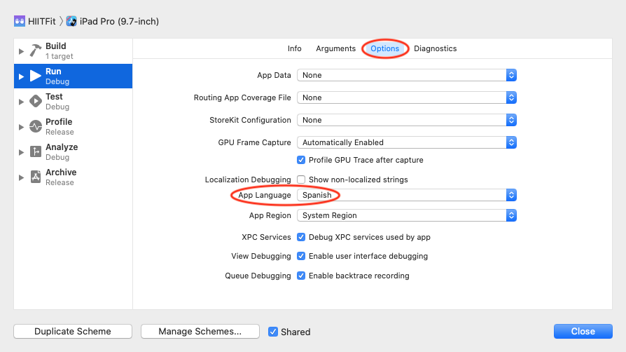
➤ 现在检查你的预览：
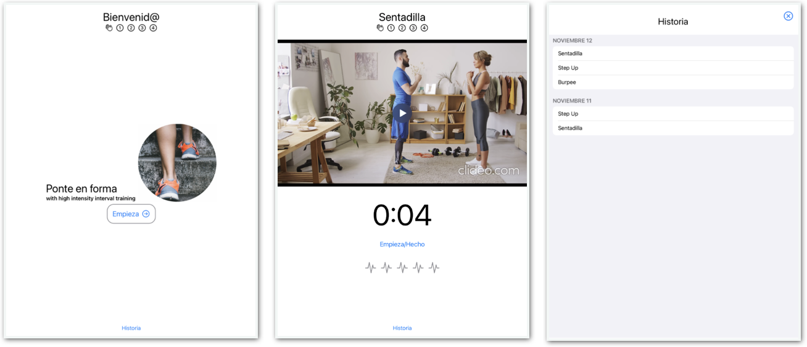
Note
11月的前三个字母在西班牙语中是一样的，所以我把日期格式改为"MMMM d"以显示完整的月份名称。
关键点¶
- 要在
ForEach循环中使用一个集合，它需要有一种方法来唯一地识别它的每个元素。最简单的方法是使其符合Identifiable并包括id: UUID作为一个属性。 - 枚举是一个命名的类型，对于分组相关的值很有用，所以编译器可以帮助你避免错误，如拼错字符串。
- 使用编译器指令，只在你开发时创建开发数据，而不是在你的应用程序的发布版本中。
- 预览内容是一个方便的地方，用来存储你只在开发时使用的代码和数据。它的内容不会被包含在你的应用程序的发布版本中。
- 本地化你的应用程序，为你的应用程序创造更多的受众。用
NSLocalizedString实例替换面向用户的文本，生成英文·文件，然后将其作为参考语言资源文件，用于添加其他语言。